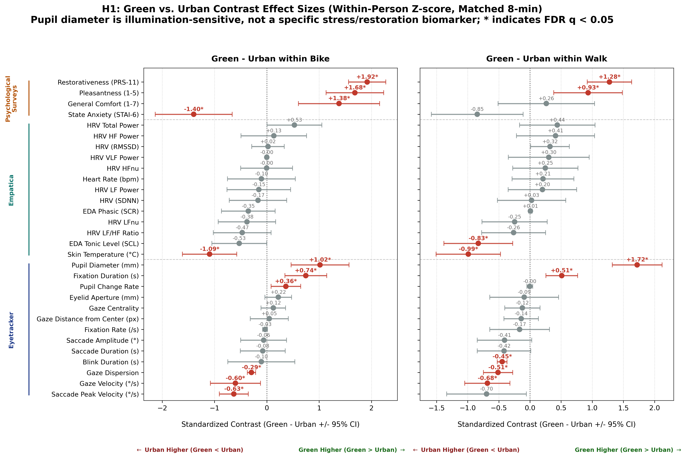
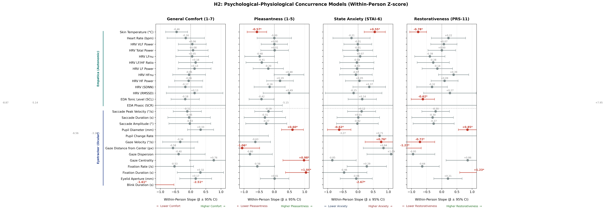
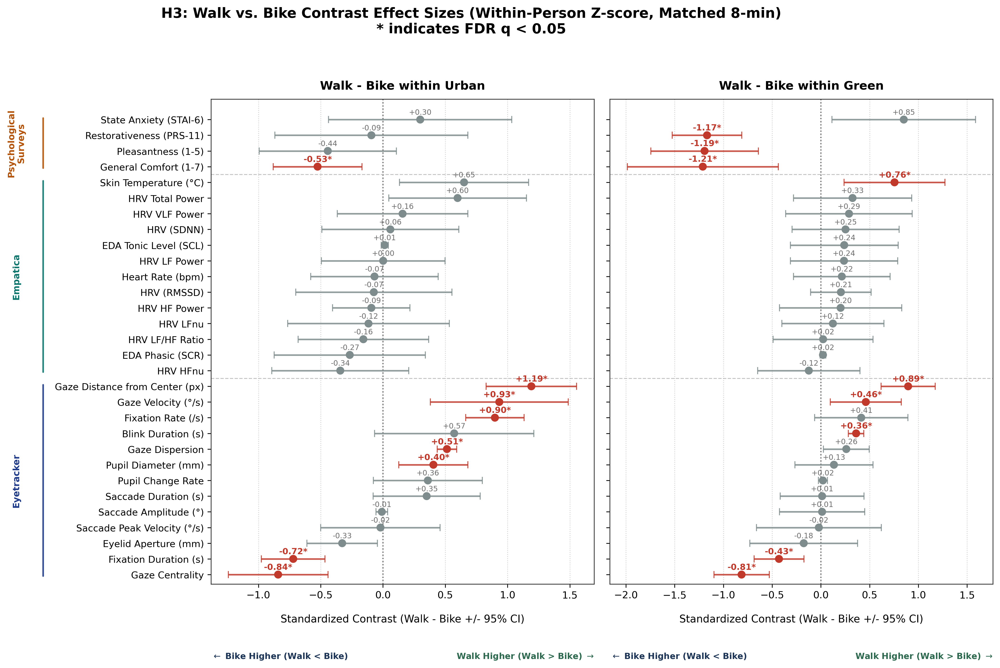
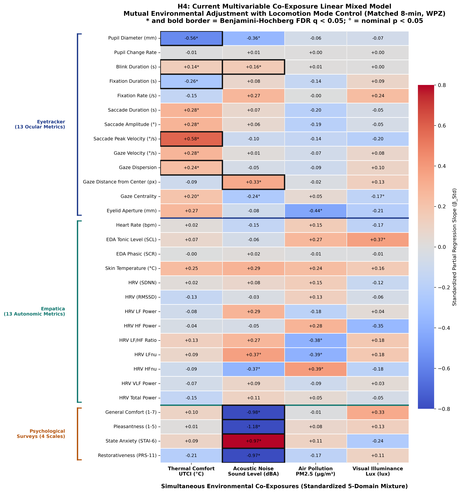

scripts/Paper3_H1toH4.py.
This document provides the full, unabridged statistical methodology, formal mathematical model specifications,
sample sizes, degrees of freedom, parameterizations, and complete column-level inclusion/exclusion audits
for all four core paper hypotheses (H1, H2, H3, H4).
Primary Input Dataset File:
C:\Users\pandya\Documents\Github\docker\Paper3_Analysis\output\merged_all_11participants_8min.csv
| Item | Value | Interpretation |
|---|---|---|
| Active input path | C:\Users\pandya\Documents\Github\docker\Paper3_Analysis\output\merged_all_11participants_8min.csv | 5,077 rows; 189 total columns |
| Participants | P10, P11, P12, P13, P14, P15, P16, P17, P4, P8, P9 | 11 participants retained in within-subject analysis |
| Phases present | BikeG, BikeU, Indoor, Tram, WalkG, WalkU, reststop | Indoor and Tram retained in the source table but are not normalization references |
| Temporal Matching | 8 minutes (48 epochs of 10s) | Eliminates duration confounding across participants and modes |
| Statistical Unit | Participant-Phase Mean (N=44) | Avoids pseudoreplication and inflated degrees of freedom from 10-s epochs |
Below is the complete, transparent audit of every column present in the merged analysis input, classified by sensor platform into fields retained for a defined analysis role (primary H4, secondary H4, H1–H3, descriptive/contextual audit) versus fields excluded from H4 predictor modeling, with the exact scientific rationale.
ucm_PET, ucm_UTCI, ucm_MRT, ucm_OPT, ucm_HUMIDEX, ucm_AIR_temp, ucm_AIR_RH, ucm_SND_dBA, ucm_SUN_Gh, ucm_WIND_AWS, ucm_WIND_TWS, ucm_SUN_alt, ucm_SUN_az, ucm_WIND_AWA, ucm_WIND_TWD, ucm_GPS_speed_kmh, ucm_GPS_hdg, ucm_MAG_hdg, ucm_GPS_HDOP.ucm_PET_SR, ucm_UTCI_SR, ucm_HUMIDEX_SR, ucm_MRT_S (solar radiation-modified variants; excluded because canonical PET, UTCI, and MRT are the primary validated thermal comfort indices, avoiding collinear duplicate variants), ucm_IR_back, ucm_IR_front, ucm_IR_left, ucm_IR_right, ucm_IR_up, ucm_IR_down, ucm_IR_spot_gnd, ucm_IR_spot_sky, ucm_IR_spot_left, ucm_IR_spot_right (raw directional infrared plane radiometers and surface spot temperatures; physical subcomponents already integrated into MRT and PET, so individual regression testing is collinear and redundant), ucm_AIR_T_bot, ucm_AIR_T_mid, ucm_AIR_T_top (pole-level raw thermistor tiers; excluded to keep solely the single canonical ucm_AIR_temp), ucm_GPS_alt (altitude elevation; excluded because study corridor elevation is flat/homogeneous), ucm_AH (absolute humidity; excluded because relative humidity ucm_AIR_RH captures ambient moisture), ucm_Date (timestamp string), ucm_GPS_lat, ucm_GPS_lon (coordinates), ucm_GPS_speed_valid_sample_count (speed sample count QC), ucm_IO_flag, ucm_fp (hardware diagnostic flags).Clearness_Index (atmospheric clearness index ratio kt = Gh / G0), Clearness_Index_G0 (theoretical extraterrestrial horizontal solar irradiance), Clearness_Index_Infer (inferred clear-sky solar radiation benchmark).empatica_heart_rate (cardiovascular autonomic arousal, bpm), empatica_eda_tonic (tonic skin conductance level / SCL, sympathetic tone), empatica_eda_phasic (phasic skin conductance responses / SCR, acute sympathetic reactivity), empatica_skin_temperature (peripheral vasomotor skin temperature, °C), empatica_hrv_td_rmssd (root mean square of successive differences, vagal/parasympathetic tone), empatica_hrv_td_sdnn (standard deviation of NN intervals, overall autonomic HRV).empatica_acc_x, empatica_acc_y, empatica_acc_z, empatica_vector_magnitude (raw triaxial accelerometer axes — utilized during preprocessing for motion artifact correction, not primary physiological strain endpoints), empatica__met (metabolic equivalent proxy — mobility mode factor captures exertion), empatica__eda_scl_usiemens (redundant raw SCL stream — superseded by cvxEDA-decomposed empatica_eda_tonic), empatica_hrv_fd_lf, empatica_hrv_fd_hf, empatica_hrv_fd_lf_hf_ratio, empatica_hrv_fd_lfnu, empatica_hrv_fd_hfnu, empatica_hrv_fd_vlf, empatica_hrv_fd_total_power (frequency-domain spectral HRV parameters — excluded due to non-stationarity across mobile outdoor transitions; Task Force 1996 guidelines mandate stationary 5-minute epochs for spectral validity, whereas time-domain RMSSD/SDNN are robust), empatica_hrv_fd_5min_available, empatica_hrv_fd_5min_segment_start, empatica_hrv_fd_5min_segment_end, empatica_hrv_fd_5min_valid_rri_count, empatica_hrv_fd_5min_removed_pct, empatica_hrv_fd_5min_max_gap_seconds, empatica_hrv_fd_5min_valid_span_seconds (HRV preprocessing window and artifact tracking metadata).eyetracker_pupil_diameter_avg (average pupil diameter, mm), eyetracker_pupil_change_rate (pupil constriction/dilation velocity), eyetracker_blink_duration_s (average blink duration, s), eyetracker_fixation_duration_s (average fixation duration, s), eyetracker_fixation_rate (fixation frequency, /s), eyetracker_saccade_duration_s (average saccade duration, s), eyetracker_saccade_amplitude (saccadic amplitude, °), eyetracker_saccade_peak_velocity (saccadic peak velocity, °/s), eyetracker_gaze_velocity (gaze transition velocity, °/s), eyetracker_gaze_dispersion (spatial dispersion of visual attention), eyetracker_distance_from_center (Euclidean gaze distance from visual center, px), eyetracker_gaze_centrality (proportion of gaze concentrated in central visual field), eyetracker_eyelid_aperture_avg (vertical eyelid aperture opening, mm).eyetracker_Date (timestamp string), eyetracker_stress_composite (exploratory multi-metric composite index — excluded from primary hypothesis testing to maintain unconfounded physiological interpretability).atmo_pm1.0_avg, atmo_pm2.5_avg, atmo_pm10_avg (particulate matter concentrations in μg/m³ — computed as balanced canonical pair-averages of Researcher Left and Researcher Right units to eliminate orientation/body-shadowing artifacts), atmo_temperature_avg, atmo_humidity_avg (ambient microclimatic validation checks).atmo_lys_atmotube_left__atmotube_pm1, atmo_lys_atmotube_left__atmotube_pm2.5, atmo_lys_atmotube_left__atmotube_pm10, atmo_lys_atmotube_left__atmotube_humidity, atmo_lys_atmotube_left__atmotube_temperature, atmo_lys_atmotube_right__atmotube_pm1, atmo_lys_atmotube_right__atmotube_pm2.5, atmo_lys_atmotube_right__atmotube_pm10, atmo_lys_atmotube_right__atmotube_humidity, atmo_lys_atmotube_right__atmotube_temperature (raw individual directional streams — consolidated into canonical bilateral averages).lys_lux_avg (photopic illuminance, lux), lys_kelvin_avg (correlated color temperature, K), lys_rgbb_avg (blue spectral irradiance), lys_rgbg_avg (green spectral irradiance), lys_rgbr_avg (red spectral irradiance) — all computed as balanced canonical pair-averages between Participant LYS1 and Researcher LYS2.lys_medi_avg (melanopic equivalent daylight illuminance medi; excluded as photopic illuminance lys_lux_avg is the standard physical illumination metric and medi is highly collinear); all 24 raw individual sensor streams (atmo_lys_LYS1__* and atmo_lys_LYS2__* including raw b', g', r', rgbir, and movement flags) — consolidated into bilateral canonical pair averages; atmo_lys_LYS1__lux_cat, atmo_lys_LYS2__lux_cat (categorical lux exposure bins), lys_lux_participant (raw participant-only unvalidated stream).gvi_50m (canonical eye-level 360° Green View Index smoothed across 50-meter spatial moving buffer — the validated continuous exposure metric).gvi_tree_50m (tree canopy view index), gvi_grass_50m (grass view index), gvi_plant_50m (low-vegetation view index), gvi_phase_mean (route-wide mean GVI), tree_phase_mean (route-wide mean tree canopy), gvi_point_gvi, gvi_point_tree (raw single-frame unsmoothed point matches), and gvi_match_dist_m (GIS distance QC flag) — all excluded to prevent collinear multi-testing duplicates of the same visual greenness exposure stream.sound_level_dbfs (continuous acoustic power, decibels relative to full scale), sound_prop_rural_natural (frame proportion of biophony and natural sounds), sound_prop_vehicle (frame proportion of motor vehicle traffic noise), sound_prop_urban_manmade_positive (frame proportion classified as Urban/Manmade_positive), sound_prop_urban_manmade_neutral (frame proportion classified as Urban/Manmade_neutral), sound_prop_urban_manmade_negative (frame proportion classified as Urban/Manmade_negative), sound_prop_wind (frame proportion of aerodynamic wind noise), sound_prop_mechanisms (frame proportion of construction/machinery noise).sound_prop_rural_natural captures identifiable biophonic sounds (birds, foliage, natural acoustics) directly relevant to environmental restoration theories. Conversely, sound_prop_unidentify represents unclassified audio residual and unlabelled background flutter with no coherent psychological or environmental meaning; it is therefore strictly excluded.sound_prop_unidentify (unclassified acoustic residual — scientifically excluded to retain solely identifiable acoustic sources like natural sounds), sound_class_id (discrete top-1 AudioSet ontology integer ID), sound_category_label (categorical text string of the single dominant sound class; statistical regression models require numerical proportion columns to estimate dosage effects).questionnaire_current_comfort_1_7 (overall momentary subjective comfort, 1-7 Likert), questionnaire_pleasantness_1_5 (perceived route pleasantness, 1-5 scale), questionnaire_stai6_mean_1_5 (State-Trait Anxiety Inventory 6-item short form, 1-5 scale), questionnaire_prs11_total_mean_1_5 (Perceived Restorativeness Scale 11-item validated total mean, 1-5 scale), questionnaire_prs11_fascination_mean_1_5, questionnaire_prs11_being_away_mean_1_5, questionnaire_prs11_coherence_mean_1_5, questionnaire_prs11_scope_mean_1_5 (PRS-11 subscale dimension scores), questionnaire_space_familiarity_1_5 (perceived spatial familiarity), questionnaire_thermal_comfort_1_5 (subjective thermal comfort rating), questionnaire_environmental_comfort_mean_1_5 (composite environmental comfort index).questionnaire_height_m, questionnaire_weight_kg, questionnaire_bmi_kg_m2, questionnaire_bmi_category_who, questionnaire_background_age, questionnaire_background_gender, questionnaire_background_nationality, questionnaire_background_residential_area, questionnaire_background_years_in_brussels, questionnaire_background_vision_correction, questionnaire_background_site_familiarity_1_10, questionnaire_background_residence_type, questionnaire_background_has_children, questionnaire_background_commute_modes, questionnaire_background_regular_physical_activity, questionnaire_background_daily_walking, questionnaire_background_bike_frequency, questionnaire_background_own_bike_for_experiment — measured once at baseline, time-invariant across experimental route bouts), clothing insulation logs (questionnaire_clothing_*, 6 columns), and administrative survey tracking IDs (questionnaire_participant_id, questionnaire_response_index_within_participant, questionnaire_background_name).ParticipantID (random-intercept grouping factor ui), PhaseID (condition identifier defining Mode: Bike/Walk and Environment: Urban/Green).Datetime, Date (timestamp tracking — models operate on phase aggregations), pct_complete (data transmission completeness %), grass_phase_mean, plant_phase_mean (redundant route-aggregated visual layers).Research Question: Does exposure to an urban green corridor (Bois de la Cambre) reduce physiological stress arousal and promote psychological restoration compared to a dense urban traffic corridor (Etterbeek / Montgomery), controlling for travel mode?
fit <- lme(outcome_z ~ Mode * Environment, random = ~ 1 | ParticipantID, data = d, method = "REML")
Columns Used:
empatica_heart_rate, empatica_eda_tonic, empatica_eda_phasic, empatica_skin_temperature, empatica_hrv_td_rmssd, empatica_hrv_td_sdnn), 13 Eyetracker (eyetracker_pupil_diameter_avg, eyetracker_pupil_change_rate, eyetracker_blink_duration_s, eyetracker_fixation_duration_s, eyetracker_fixation_rate, eyetracker_saccade_duration_s, eyetracker_saccade_amplitude, eyetracker_saccade_peak_velocity, eyetracker_gaze_velocity, eyetracker_gaze_dispersion, eyetracker_distance_from_center, eyetracker_gaze_centrality, eyetracker_eyelid_aperture_avg), 4 Psychological (questionnaire_current_comfort_1_7, questionnaire_pleasantness_1_5, questionnaire_stai6_mean_1_5, questionnaire_prs11_total_mean_1_5).Environment (Urban [ref] vs. Green), Mode (Bike [ref] vs. Walk), and their factorial interaction Mode * Environment.ParticipantID (11 participants, random intercept).Planned Contrasts (Extracted via emmeans):
| Item | Value | Interpretation |
|---|---|---|
| Results CSV file | C:\Users\pandya\Documents\Github\docker\Paper3_Analysis\output\statistical_analysis\H1_Green_vs_Urban.csv | 60 total contrast rows in results table |
| Total Models Fitted | 60 contrast estimates | Matched 8-minute data; Within-Person Z-score only |
| FDR-Significant Contrasts | 20 significant contrasts (q_FDR < 0.05) | Benjamini-Hochberg adjustment applied within each outcome family |
| Sample Size & Degrees of Freedom | N = 44 phase bouts (11 participants x 4 route conditions) | Degrees of freedom df ≈ 28 to 30 |
| Output timestamp | 2026-10-01 18:36:37 | current or newer than input |
Testing acute physiological and psychological restoration when traveling by bike in Bois de la Cambre park versus Etterbeek traffic corridor.
| Outcome | Predictor / Contrast | Beta ± SE | 95% CI | t-statistic | p-value | q (FDR) | Condition | Interpretation |
|---|---|---|---|---|---|---|---|---|
| Survey: General Comfort (1-7) | Green - Urban within Bike | +0.000 ± 0.378 | [+0.717, +2.552] | t = +0.00 | 0.0011 | 0.0037 | Matched_start_8min | Within-Person Z-score | BikeG > BikeU for questionnaire_current_comfort_1_7 |
| Survey: Pleasantness (1-5) | Green - Urban within Bike | +0.000 ± 0.270 | [+1.787, +3.529] | t = +0.00 | 7.26e-07 | 7.26e-06 | Matched_start_8min | Within-Person Z-score | BikeG > BikeU for questionnaire_pleasantness_1_5 |
| Survey: State Anxiety (STAI-6) | Green - Urban within Bike | +0.000 ± 0.359 | [-2.661, -0.826] | t = +0.00 | 5.78e-04 | 0.0029 | Matched_start_8min | Within-Person Z-score | BikeU > BikeG for questionnaire_stai6_mean_1_5 |
| Survey: Restorativeness (PRS-11) | Green - Urban within Bike | +0.000 ± 0.174 | [+3.817, +5.559] | t = +0.00 | 4.80e-12 | 1.44e-10 | Matched_start_8min | Within-Person Z-score | BikeG > BikeU for questionnaire_prs11_total_mean_1_5 |
| Empatica: Skin Temperature (°C) | Green - Urban within Bike | +0.000 ± 0.254 | [-2.710, -0.968] | t = +0.00 | 1.61e-04 | 9.64e-04 | Matched_start_8min | Within-Person Z-score | BikeU > BikeG for empatica_skin_temperature |
| Eyetracker: Pupil Diameter (mm) | Green - Urban within Bike | +0.000 ± 0.195 | [+0.791, +2.627] | t = +0.00 | 7.08e-04 | 0.0030 | Matched_start_8min | Within-Person Z-score | BikeG > BikeU for eyetracker_pupil_diameter_avg |
| Eyetracker: Blink Duration (s) | Green - Urban within Bike | +0.000 ± 0.038 | [-4.342, -2.507] | t = +0.00 | 3.10e-08 | 4.65e-07 | Matched_start_8min | Within-Person Z-score | BikeU > BikeG for eyetracker_blink_duration_s |
| Eyetracker: Fixation Rate (/s) | Green - Urban within Bike | +0.000 ± 0.234 | [-2.068, -0.233] | t = +0.00 | 0.0159 | 0.0434 | Matched_start_8min | Within-Person Z-score | BikeU > BikeG for eyetracker_fixation_rate |
| Eyetracker: Gaze Distance from Center (px) | Green - Urban within Bike | +0.000 ± 0.135 | [-3.007, -1.171] | t = +0.00 | 7.37e-05 | 5.53e-04 | Matched_start_8min | Within-Person Z-score | BikeU > BikeG for eyetracker_distance_from_center |
| Eyetracker: Gaze Centrality | Green - Urban within Bike | +0.000 ± 0.138 | [+0.259, +2.094] | t = +0.00 | 0.0139 | 0.0417 | Matched_start_8min | Within-Person Z-score | BikeG > BikeU for eyetracker_gaze_centrality |
| Eyetracker: Eyelid Aperture (mm) | Green - Urban within Bike | +0.000 ± 0.270 | [+0.770, +2.605] | t = +0.00 | 8.03e-04 | 0.0030 | Matched_start_8min | Within-Person Z-score | BikeG > BikeU for eyetracker_eyelid_aperture_avg |
Testing acute physiological and psychological restoration when walking in Bois de la Cambre park versus Etterbeek traffic corridor.
| Outcome | Predictor / Contrast | Beta ± SE | 95% CI | t-statistic | p-value | q (FDR) | Condition | Interpretation |
|---|---|---|---|---|---|---|---|---|
| Survey: Pleasantness (1-5) | Green - Urban within Walk | +0.000 ± 0.270 | [+0.603, +2.345] | t = +0.00 | 0.0017 | 0.0062 | Matched_start_8min | Within-Person Z-score | WalkG > WalkU for questionnaire_pleasantness_1_5 |
| Survey: Restorativeness (PRS-11) | Green - Urban within Walk | +0.000 ± 0.174 | [+2.247, +3.989] | t = +0.00 | 3.82e-08 | 3.82e-07 | Matched_start_8min | Within-Person Z-score | WalkG > WalkU for questionnaire_prs11_total_mean_1_5 |
| Empatica: EDA Tonic Level (SCL) | Green - Urban within Walk | +0.000 ± 0.271 | [-2.178, -0.436] | t = +0.00 | 0.0046 | 0.0152 | Matched_start_8min | Within-Person Z-score | WalkU > WalkG for empatica_eda_tonic |
| Empatica: Skin Temperature (°C) | Green - Urban within Walk | +0.000 ± 0.254 | [-2.534, -0.793] | t = +0.00 | 5.00e-04 | 0.0025 | Matched_start_8min | Within-Person Z-score | WalkU > WalkG for empatica_skin_temperature |
| Eyetracker: Pupil Diameter (mm) | Green - Urban within Walk | +0.000 ± 0.195 | [+3.030, +4.866] | t = +0.00 | 1.92e-09 | 2.87e-08 | Matched_start_8min | Within-Person Z-score | WalkG > WalkU for eyetracker_pupil_diameter_avg |
| Eyetracker: Blink Duration (s) | Green - Urban within Walk | +0.000 ± 0.038 | [-6.109, -4.274] | t = +0.00 | 5.27e-12 | 1.58e-10 | Matched_start_8min | Within-Person Z-score | WalkU > WalkG for eyetracker_blink_duration_s |
| Eyetracker: Fixation Duration (s) | Green - Urban within Walk | +0.000 ± 0.125 | [+0.915, +2.750] | t = +0.00 | 3.42e-04 | 0.0021 | Matched_start_8min | Within-Person Z-score | WalkG > WalkU for eyetracker_fixation_duration_s |
| Eyetracker: Gaze Velocity (°/s) | Green - Urban within Walk | +0.000 ± 0.177 | [-2.644, -0.809] | t = +0.00 | 6.38e-04 | 0.0027 | Matched_start_8min | Within-Person Z-score | WalkU > WalkG for eyetracker_gaze_velocity |
| Eyetracker: Gaze Dispersion | Green - Urban within Walk | +0.000 ± 0.115 | [-2.921, -1.086] | t = +0.00 | 1.23e-04 | 9.25e-04 | Matched_start_8min | Within-Person Z-score | WalkU > WalkG for eyetracker_gaze_dispersion |

Research Question: Do acute within-person shifts in self-reported psychological states (anxiety, restorativeness, comfort, pleasantness) correspond to concurrent changes in autonomic and physiological markers during active travel?
fit <- lme(phys_z ~ psych_z, random = ~ 1 | ParticipantID, data = d, method = "REML")
Columns Used:
questionnaire_current_comfort_1_7, questionnaire_pleasantness_1_5, questionnaire_stai6_mean_1_5, questionnaire_prs11_total_mean_1_5).ParticipantID (accounting for repeated measures per subject).| Item | Value | Interpretation |
|---|---|---|
| Results CSV file | C:\Users\pandya\Documents\Github\docker\Paper3_Analysis\output\statistical_analysis\H2_Physio_Psycho_Concordance.csv | 104 total concurrence models evaluated |
| Total Models Fitted | 104 bivariate psychophysiological models | Within-Person Z-score only; 4 psychological scales x 19 physiological metrics (6 Empatica + 13 Eyetracker) |
| FDR-Significant Concurrences | 18 models significant at q_FDR < 0.05 | Omnibus Benjamini-Hochberg adjustment across all 76 pairs |
| Effect Size Metric | Standardized Slope (Beta_Within_Std) & Partial Correlation r_within | r_within = sign(t) * sqrt(t^2 / (t^2 + df)) |
| Output timestamp | 2026-10-01 18:36:37 | current or newer than input |
Testing direct psychophysiological coupling across 76 candidate pairs (4 psychological survey dimensions × 19 physiological measures). All models evaluated with standardized within-person Z-scores. Omnibus Benjamini-Hochberg adjustment applied across all 76 pairs: 25 pairs reach FDR significance at q < 0.05.
Higher perceived restorativeness is associated with reduced peripheral temperature (β = −0.671, q = 4.02e-05), lower tonic sympathetic EDA (β = −0.404, q = 0.0276), shorter blink durations (β = −0.817, q = 6.17e-08), longer visual fixations (β = +0.620, q = 4.82e-04), dilated pupils (β = +0.663, q = 1.29e-04), and concentrated visual exploration (lower gaze velocity, dispersion, and eccentricity).
| Outcome | Predictor / Contrast | Beta ± SE | 95% CI | t-statistic | p-value | q (FDR) | Condition | Interpretation |
|---|---|---|---|---|---|---|---|---|
| Eyetracker: Blink Duration (s) | Survey: Restorativeness (PRS-11) | -2.672 ± 0.320 | [-3.299, -2.045] | t = -8.35 | 3.30e-09 | 3.43e-07 | Matched_start_8min | Within-Person Z-score | Higher Eyetracker: Blink Duration (s) is associated with lower Survey: Restorativeness (PRS-11) |
| Eyetracker: Pupil Diameter (mm) | Survey: Restorativeness (PRS-11) | +0.849 ± 0.148 | [+0.559, +1.139] | t = +5.74 | 3.22e-06 | 8.38e-05 | Matched_start_8min | Within-Person Z-score | Higher Eyetracker: Pupil Diameter (mm) is associated with higher Survey: Restorativeness (PRS-11) |
| Empatica: Skin Temperature (°C) | Survey: Restorativeness (PRS-11) | -0.777 ± 0.136 | [-1.045, -0.510] | t = -5.69 | 2.64e-06 | 8.38e-05 | Matched_start_8min | Within-Person Z-score | Higher Empatica: Skin Temperature (°C) is associated with lower Survey: Restorativeness (PRS-11) |
| Eyetracker: Gaze Distance from Center (px) | Survey: Restorativeness (PRS-11) | -1.217 ± 0.265 | [-1.737, -0.698] | t = -4.60 | 7.77e-05 | 0.0013 | Matched_start_8min | Within-Person Z-score | Higher Eyetracker: Gaze Distance from Center (px) is associated with lower Survey: Restorativeness (PRS-11) |
| Eyetracker: Fixation Duration (s) | Survey: Restorativeness (PRS-11) | +1.231 ± 0.312 | [+0.620, +1.842] | t = +3.95 | 4.61e-04 | 0.0068 | Matched_start_8min | Within-Person Z-score | Higher Eyetracker: Fixation Duration (s) is associated with higher Survey: Restorativeness (PRS-11) |
| Empatica: EDA Tonic Level (SCL) | Survey: Restorativeness (PRS-11) | -0.622 ± 0.190 | [-0.994, -0.250] | t = -3.28 | 0.0025 | 0.0238 | Matched_start_8min | Within-Person Z-score | Higher Empatica: EDA Tonic Level (SCL) is associated with lower Survey: Restorativeness (PRS-11) |
| Eyetracker: Gaze Velocity (°/s) | Survey: Restorativeness (PRS-11) | -0.717 ± 0.239 | [-1.186, -0.249] | t = -3.00 | 0.0055 | 0.0358 | Matched_start_8min | Within-Person Z-score | Higher Eyetracker: Gaze Velocity (°/s) is associated with lower Survey: Restorativeness (PRS-11) |
Higher subjective pleasantness aligns closely with the PRS-11 restorative profile: reduced skin temperature (β = −0.500, q = 0.0057), constricted blink durations (β = −0.760, q = 1.93e-06), lengthened fixations (β = +0.488, q = 0.0119), dilated pupils (β = +0.450, q = 0.0223), reduced pupil change rate (β = −0.395, q = 0.0366), and concentrated, centered visual focus (gaze centrality β = +0.446, q = 0.0229).
| Outcome | Predictor / Contrast | Beta ± SE | 95% CI | t-statistic | p-value | q (FDR) | Condition | Interpretation |
|---|---|---|---|---|---|---|---|---|
| Eyetracker: Blink Duration (s) | Survey: Pleasantness (1-5) | -2.515 ± 0.352 | [-3.204, -1.825] | t = -7.15 | 7.26e-08 | 3.77e-06 | Matched_start_8min | Within-Person Z-score | Higher Eyetracker: Blink Duration (s) is associated with lower Survey: Pleasantness (1-5) |
| Eyetracker: Gaze Distance from Center (px) | Survey: Pleasantness (1-5) | -1.061 ± 0.282 | [-1.614, -0.508] | t = -3.76 | 7.62e-04 | 0.0099 | Matched_start_8min | Within-Person Z-score | Higher Eyetracker: Gaze Distance from Center (px) is associated with lower Survey: Pleasantness (1-5) |
| Empatica: Skin Temperature (°C) | Survey: Pleasantness (1-5) | -0.573 ± 0.159 | [-0.884, -0.262] | t = -3.61 | 0.0010 | 0.0119 | Matched_start_8min | Within-Person Z-score | Higher Empatica: Skin Temperature (°C) is associated with lower Survey: Pleasantness (1-5) |
| Eyetracker: Pupil Diameter (mm) | Survey: Pleasantness (1-5) | +0.598 ± 0.177 | [+0.251, +0.946] | t = +3.38 | 0.0021 | 0.0218 | Matched_start_8min | Within-Person Z-score | Higher Eyetracker: Pupil Diameter (mm) is associated with higher Survey: Pleasantness (1-5) |
| Eyetracker: Fixation Duration (s) | Survey: Pleasantness (1-5) | +1.044 ± 0.329 | [+0.398, +1.689] | t = +3.17 | 0.0036 | 0.0267 | Matched_start_8min | Within-Person Z-score | Higher Eyetracker: Fixation Duration (s) is associated with higher Survey: Pleasantness (1-5) |
| Eyetracker: Gaze Centrality | Survey: Pleasantness (1-5) | +0.980 ± 0.340 | [+0.313, +1.646] | t = +2.88 | 0.0074 | 0.0427 | Matched_start_8min | Within-Person Z-score | Higher Eyetracker: Gaze Centrality is associated with higher Survey: Pleasantness (1-5) |
Higher state anxiety shows an exact reciprocal pattern to restorativeness: elevated skin temperature (β = +0.468, q = 0.0187), elongated blink durations (β = +0.669, q = 2.74e-04), constricted pupils (β = −0.450, q = 0.0276), higher gaze velocity (β = +0.456, q = 0.0255), greater gaze dispersion (β = +0.486, q = 0.0208), and greater peripheral visual eccentricity (β = +0.428, q = 0.0355).
| Outcome | Predictor / Contrast | Beta ± SE | 95% CI | t-statistic | p-value | q (FDR) | Condition | Interpretation |
|---|---|---|---|---|---|---|---|---|
| Eyetracker: Blink Duration (s) | Survey: State Anxiety (STAI-6) | +2.288 ± 0.431 | [+1.443, +3.133] | t = +5.31 | 1.49e-05 | 3.10e-04 | Matched_start_8min | Within-Person Z-score | Higher Eyetracker: Blink Duration (s) is associated with higher Survey: State Anxiety (STAI-6) |
| Eyetracker: Pupil Diameter (mm) | Survey: State Anxiety (STAI-6) | -0.622 ± 0.189 | [-0.993, -0.251] | t = -3.28 | 0.0029 | 0.0240 | Matched_start_8min | Within-Person Z-score | Higher Eyetracker: Pupil Diameter (mm) is associated with lower Survey: State Anxiety (STAI-6) |
| Empatica: Skin Temperature (°C) | Survey: State Anxiety (STAI-6) | +0.552 ± 0.170 | [+0.218, +0.885] | t = +3.24 | 0.0030 | 0.0240 | Matched_start_8min | Within-Person Z-score | Higher Empatica: Skin Temperature (°C) is associated with higher Survey: State Anxiety (STAI-6) |
| Eyetracker: Gaze Velocity (°/s) | Survey: State Anxiety (STAI-6) | +0.763 ± 0.258 | [+0.258, +1.268] | t = +2.96 | 0.0064 | 0.0394 | Matched_start_8min | Within-Person Z-score | Higher Eyetracker: Gaze Velocity (°/s) is associated with higher Survey: State Anxiety (STAI-6) |
General comfort exhibits congruent coupling with reduced peripheral temperature (β = −0.380, q = 0.0482) and reduced blink duration (β = −0.470, q = 0.0253).
| Outcome | Predictor / Contrast | Beta ± SE | 95% CI | t-statistic | p-value | q (FDR) | Condition | Interpretation |
|---|---|---|---|---|---|---|---|---|
| Eyetracker: Blink Duration (s) | Survey: General Comfort (1-7) | -1.606 ± 0.514 | [-2.613, -0.599] | t = -3.13 | 0.0043 | 0.0299 | Matched_start_8min | Within-Person Z-score | Higher Eyetracker: Blink Duration (s) is associated with lower Survey: General Comfort (1-7) |

Research Question: How does active travel mode (Walk versus Bike) modulate physiological arousal, visual search, and self-reported comfort, and does travel mode moderate the restorative effect of green space?
fit <- lme(outcome_z ~ Mode * Environment, random = ~ 1 | ParticipantID, data = d, method = "REML")
Columns Used:
Mode (Bike [ref] vs. Walk), Environment (Urban [ref] vs. Green), and their interaction term.ParticipantID.Planned Contrasts (Extracted via emmeans):
| Item | Value | Interpretation |
|---|---|---|
| Results CSV file | C:\Users\pandya\Documents\Github\docker\Paper3_Analysis\output\statistical_analysis\H3_Walk_vs_Bike.csv | 60 total contrast rows in results table |
| Total Models Fitted | 60 contrast estimates | Matched 8-minute data; Within-Person Z-score only |
| FDR-Significant Contrasts | 17 significant contrasts (q_FDR < 0.05) | Benjamini-Hochberg adjustment applied within each outcome family |
| Sample Size & Degrees of Freedom | N = 44 phase bouts (11 participants x 4 route conditions) | Degrees of freedom df ≈ 28 to 30 |
| Output timestamp | 2026-10-01 18:36:37 | current or newer than input |
Testing behavioral, physiological, and psychological differences between Walk and Bike travelers in the urban traffic corridor.
| Outcome | Predictor / Contrast | Beta ± SE | 95% CI | t-statistic | p-value | q (FDR) | Condition | Interpretation |
|---|---|---|---|---|---|---|---|---|
| Survey: Restorativeness (PRS-11) | Walk - Bike within Urban | +0.000 ± 0.174 | [-2.154, -0.412] | t = +0.00 | 0.0053 | 0.0217 | Matched_start_8min | Within-Person Z-score | BikeU > WalkU for questionnaire_prs11_total_mean_1_5 |
| Eyetracker: Pupil Diameter (mm) | Walk - Bike within Urban | +0.000 ± 0.195 | [-2.849, -1.014] | t = +0.00 | 1.89e-04 | 0.0011 | Matched_start_8min | Within-Person Z-score | BikeU > WalkU for eyetracker_pupil_diameter_avg |
| Eyetracker: Blink Duration (s) | Walk - Bike within Urban | +0.000 ± 0.038 | [+5.057, +6.892] | t = +0.00 | 2.05e-13 | 6.14e-12 | Matched_start_8min | Within-Person Z-score | WalkU > BikeU for eyetracker_blink_duration_s |
| Eyetracker: Fixation Duration (s) | Walk - Bike within Urban | +0.000 ± 0.125 | [-3.505, -1.670] | t = +0.00 | 3.72e-06 | 2.79e-05 | Matched_start_8min | Within-Person Z-score | BikeU > WalkU for eyetracker_fixation_duration_s |
| Eyetracker: Gaze Velocity (°/s) | Walk - Bike within Urban | +0.000 ± 0.177 | [+2.092, +3.927] | t = +0.00 | 3.17e-07 | 3.17e-06 | Matched_start_8min | Within-Person Z-score | WalkU > BikeU for eyetracker_gaze_velocity |
| Eyetracker: Gaze Dispersion | Walk - Bike within Urban | +0.000 ± 0.115 | [+2.589, +4.424] | t = +0.00 | 1.98e-08 | 2.97e-07 | Matched_start_8min | Within-Person Z-score | WalkU > BikeU for eyetracker_gaze_dispersion |
| Eyetracker: Gaze Distance from Center (px) | Walk - Bike within Urban | +0.000 ± 0.135 | [+0.423, +2.258] | t = +0.00 | 0.0058 | 0.0217 | Matched_start_8min | Within-Person Z-score | WalkU > BikeU for eyetracker_distance_from_center |
| Eyetracker: Eyelid Aperture (mm) | Walk - Bike within Urban | +0.000 ± 0.270 | [+0.632, +2.467] | t = +0.00 | 0.0018 | 0.0089 | Matched_start_8min | Within-Person Z-score | WalkU > BikeU for eyetracker_eyelid_aperture_avg |
Testing behavioral, physiological, and psychological differences between Walk and Bike travelers in the green park corridor.
| Outcome | Predictor / Contrast | Beta ± SE | 95% CI | t-statistic | p-value | q (FDR) | Condition | Interpretation |
|---|---|---|---|---|---|---|---|---|
| Survey: General Comfort (1-7) | Walk - Bike within Green | +0.000 ± 0.378 | [-2.352, -0.516] | t = +0.00 | 0.0034 | 0.0148 | Matched_start_8min | Within-Person Z-score | BikeG > WalkG for questionnaire_current_comfort_1_7 |
| Survey: Pleasantness (1-5) | Walk - Bike within Green | +0.000 ± 0.270 | [-2.755, -1.013] | t = +0.00 | 1.20e-04 | 7.18e-04 | Matched_start_8min | Within-Person Z-score | BikeG > WalkG for questionnaire_pleasantness_1_5 |
| Survey: Restorativeness (PRS-11) | Walk - Bike within Green | +0.000 ± 0.174 | [-3.724, -1.982] | t = +0.00 | 2.06e-07 | 3.09e-06 | Matched_start_8min | Within-Person Z-score | BikeG > WalkG for questionnaire_prs11_total_mean_1_5 |
| Empatica: Skin Temperature (°C) | Walk - Bike within Green | +0.000 ± 0.254 | [+0.398, +2.140] | t = +0.00 | 0.0057 | 0.0214 | Matched_start_8min | Within-Person Z-score | WalkG > BikeG for empatica_skin_temperature |
| Eyetracker: Blink Duration (s) | Walk - Bike within Green | +0.000 ± 0.038 | [+3.290, +5.125] | t = +0.00 | 5.18e-10 | 1.55e-08 | Matched_start_8min | Within-Person Z-score | WalkG > BikeG for eyetracker_blink_duration_s |
| Eyetracker: Fixation Duration (s) | Walk - Bike within Green | +0.000 ± 0.125 | [-2.461, -0.626] | t = +0.00 | 0.0019 | 0.0093 | Matched_start_8min | Within-Person Z-score | BikeG > WalkG for eyetracker_fixation_duration_s |
| Eyetracker: Gaze Velocity (°/s) | Walk - Bike within Green | +0.000 ± 0.177 | [+0.247, +2.082] | t = +0.00 | 0.0148 | 0.0493 | Matched_start_8min | Within-Person Z-score | WalkG > BikeG for eyetracker_gaze_velocity |
| Eyetracker: Gaze Distance from Center (px) | Walk - Bike within Green | +0.000 ± 0.135 | [+2.046, +3.881] | t = +0.00 | 4.12e-07 | 4.12e-06 | Matched_start_8min | Within-Person Z-score | WalkG > BikeG for eyetracker_distance_from_center |
| Eyetracker: Gaze Centrality | Walk - Bike within Green | +0.000 ± 0.138 | [-3.548, -1.713] | t = +0.00 | 2.89e-06 | 2.17e-05 | Matched_start_8min | Within-Person Z-score | BikeG > WalkG for eyetracker_gaze_centrality |

H4_Candidate_Audit.csv, and retains 33 continuous environmental candidates without using outcome p-values. Hypothesis 4 then uses a predeclared 4-domain multivariable linear mixed-effects model (LMM) under simultaneous mutual adjustment, alongside physical locomotion mode control (Mode). The one-predictor models are secondary and are not used as the primary H4 inference.
Primary Research Question: When all retained physical environmental predictors are modeled simultaneously while controlling for physical locomotion effort (Mode), which ambient exposures show independent adjusted associations with acute physiological arousal, visual search behaviors, and psychological comfort during active urban travel?
Level 1 (Within-Subject / Route Bout Level — j ∈ {BikeU, WalkU, BikeG, WalkG}):
Level 2 (Between-Subject / Clustering Level — Participant i ∈ {1, …, 11}):
Combined Multivariable 4-Predictor Co-Exposure LMM:
Exact R Implementation (nlme package via Restricted Maximum Likelihood):
lme(outcome_z ~ Mode + wpz__ucm_UTCI + wpz__ucm_SND_dBA + wpz__atmo_pm2.5_avg + wpz__lys_lux_avg, random = ~ 1 | ParticipantID, data = d_m, method = "REML")
ParticipantID + PhaseID, so each BikeG exposure is paired with that same participant's BikeG outcome; phases are never cross-matched.gvi_50m.
gvi_50m; the final primary VIFs are ucm_UTCI = 1.46, ucm_SND_dBA = 1.88, atmo_pm2.5_avg = 1.61, lys_lux_avg = 1.4:
H4_Candidate_Audit.csv; a single all-candidate VIF is not estimable because only 19 participant-phase rows are complete for all 33 streams.| Item | Value | Interpretation |
|---|---|---|
| Model Specification | 4-Predictor Multivariable Co-Exposure LMM | ucm_UTCI + ucm_SND_dBA + atmo_pm2.5_avg + lys_lux_avg + Mode |
| Results File | C:\Users\pandya\Documents\Github\docker\Paper3_Analysis\output\statistical_analysis\H4_Multivariable_CoExposure.csv | 120 total multivariable regression coefficients |
| Total Outcomes Evaluated | 30 outcomes (13 Ocular, 13 Autonomic, 4 Psychological) | 120 total multivariable regression terms |
| FDR-Significant Effects | 11 associations reach BH-FDR q < 0.05 | 11 effects across the retained primary predictors |
| Nominal p < 0.05 Effects | 25 associations significant at unadjusted p < 0.05 | 25 nominal effects across the retained primary predictors |
| Sample Size & Degrees of Freedom | N = 44 when complete; N = 40 for some outcomes | Model-specific residual df (27 for N = 44; 24 for N = 40) |
| Estimation Method | Restricted Maximum Likelihood (REML via nlme::lme) | Unbiased variance component estimation |
| Output Timestamp | 2026-10-01 18:36:37 | current or newer than input |
Standardized partial regression slopes (βStd) from the 4-predictor multivariable LMM representing the outcome change per 1 SD increase in exposure, holding the other retained environmental co-exposures and travel mode constant. GVI was audited but removed before primary H4 because of its matched-design VIF. These are associations, not evidence of a singular causal driver.
| Outcome | Predictor / Contrast | Beta ± SE | 95% CI | t-statistic | p-value | q (FDR) | Condition | Interpretation |
|---|---|---|---|---|---|---|---|---|
| Survey: Restorativeness (PRS-11) | UCM: Acoustic Noise Level (dBA) | -0.973 ± 0.131 | [-1.231, -0.716] | t = -7.41 | 4.56e-08 | 1.37e-06 | Matched_start_8min | Within-Person Z-score | Higher UCM: Acoustic Noise Level (dBA) is associated with lower Survey: Restorativeness (PRS-11) (Mode & co-exposure adjusted) |
| Survey: Pleasantness (1-5) | UCM: Acoustic Noise Level (dBA) | -1.177 ± 0.180 | [-1.529, -0.824] | t = -6.54 | 4.36e-07 | 6.54e-06 | Matched_start_8min | Within-Person Z-score | Higher UCM: Acoustic Noise Level (dBA) is associated with lower Survey: Pleasantness (1-5) (Mode & co-exposure adjusted) |
| Eyetracker: Blink Duration (s) | UCM: Acoustic Noise Level (dBA) | +0.158 ± 0.025 | [+0.108, +0.207] | t = +6.21 | 1.72e-06 | 1.72e-05 | Matched_start_8min | Within-Person Z-score | Higher UCM: Acoustic Noise Level (dBA) is associated with higher Eyetracker: Blink Duration (s) (Mode & co-exposure adjusted) |
| Eyetracker: Blink Duration (s) | UCM: UTCI Thermal Index (°C) | +0.139 ± 0.023 | [+0.094, +0.184] | t = +6.03 | 2.70e-06 | 8.09e-05 | Matched_start_8min | Within-Person Z-score | Higher UCM: UTCI Thermal Index (°C) is associated with higher Eyetracker: Blink Duration (s) (Mode & co-exposure adjusted) |
| Eyetracker: Pupil Diameter (mm) | UCM: UTCI Thermal Index (°C) | -0.563 ± 0.129 | [-0.815, -0.311] | t = -4.38 | 1.87e-04 | 0.0028 | Matched_start_8min | Within-Person Z-score | Higher UCM: UTCI Thermal Index (°C) is associated with lower Eyetracker: Pupil Diameter (mm) (Mode & co-exposure adjusted) |
| Survey: State Anxiety (STAI-6) | UCM: Acoustic Noise Level (dBA) | +0.967 ± 0.223 | [+0.529, +1.405] | t = +4.33 | 2.14e-04 | 0.0016 | Matched_start_8min | Within-Person Z-score | Higher UCM: Acoustic Noise Level (dBA) is associated with higher Survey: State Anxiety (STAI-6) (Mode & co-exposure adjusted) |
| Survey: General Comfort (1-7) | UCM: Acoustic Noise Level (dBA) | -0.982 ± 0.250 | [-1.472, -0.492] | t = -3.93 | 5.96e-04 | 0.0036 | Matched_start_8min | Within-Person Z-score | Higher UCM: Acoustic Noise Level (dBA) is associated with lower Survey: General Comfort (1-7) (Mode & co-exposure adjusted) |
| Eyetracker: Gaze Distance from Center (px) | UCM: Acoustic Noise Level (dBA) | +0.326 ± 0.098 | [+0.135, +0.518] | t = +3.34 | 0.0026 | 0.0130 | Matched_start_8min | Within-Person Z-score | Higher UCM: Acoustic Noise Level (dBA) is associated with higher Eyetracker: Gaze Distance from Center (px) (Mode & co-exposure adjusted) |
| Eyetracker: Fixation Duration (s) | UCM: UTCI Thermal Index (°C) | -0.263 ± 0.081 | [-0.422, -0.104] | t = -3.24 | 0.0034 | 0.0314 | Matched_start_8min | Within-Person Z-score | Higher UCM: UTCI Thermal Index (°C) is associated with lower Eyetracker: Fixation Duration (s) (Mode & co-exposure adjusted) |
| Eyetracker: Gaze Dispersion | UCM: UTCI Thermal Index (°C) | +0.237 ± 0.075 | [+0.090, +0.385] | t = +3.15 | 0.0042 | 0.0314 | Matched_start_8min | Within-Person Z-score | Higher UCM: UTCI Thermal Index (°C) is associated with higher Eyetracker: Gaze Dispersion (Mode & co-exposure adjusted) |
| Eyetracker: Saccade Peak Velocity (°/s) | UCM: UTCI Thermal Index (°C) | +0.582 ± 0.195 | [+0.199, +0.965] | t = +2.98 | 0.0064 | 0.0383 | Matched_start_8min | Within-Person Z-score | Higher UCM: UTCI Thermal Index (°C) is associated with higher Eyetracker: Saccade Peak Velocity (°/s) (Mode & co-exposure adjusted) |
Multivariable co-exposure associations for the retained non-acoustic predictors reaching nominal unadjusted significance (p < 0.05) before FDR adjustment under mutual control:
| Outcome | Predictor / Contrast | Beta ± SE | 95% CI | t-statistic | p-value | q (FDR) | Condition | Interpretation |
|---|---|---|---|---|---|---|---|---|
| Eyetracker: Blink Duration (s) | UCM: UTCI Thermal Index (°C) | +0.139 ± 0.023 | [+0.094, +0.184] | t = +6.03 | 2.70e-06 | 8.09e-05 | Matched_start_8min | Within-Person Z-score | Higher UCM: UTCI Thermal Index (°C) is associated with higher Eyetracker: Blink Duration (s) (Mode & co-exposure adjusted) |
| Eyetracker: Pupil Diameter (mm) | UCM: UTCI Thermal Index (°C) | -0.563 ± 0.129 | [-0.815, -0.311] | t = -4.38 | 1.87e-04 | 0.0028 | Matched_start_8min | Within-Person Z-score | Higher UCM: UTCI Thermal Index (°C) is associated with lower Eyetracker: Pupil Diameter (mm) (Mode & co-exposure adjusted) |
| Eyetracker: Fixation Duration (s) | UCM: UTCI Thermal Index (°C) | -0.263 ± 0.081 | [-0.422, -0.104] | t = -3.24 | 0.0034 | 0.0314 | Matched_start_8min | Within-Person Z-score | Higher UCM: UTCI Thermal Index (°C) is associated with lower Eyetracker: Fixation Duration (s) (Mode & co-exposure adjusted) |
| Eyetracker: Gaze Dispersion | UCM: UTCI Thermal Index (°C) | +0.237 ± 0.075 | [+0.090, +0.385] | t = +3.15 | 0.0042 | 0.0314 | Matched_start_8min | Within-Person Z-score | Higher UCM: UTCI Thermal Index (°C) is associated with higher Eyetracker: Gaze Dispersion (Mode & co-exposure adjusted) |
| Eyetracker: Saccade Peak Velocity (°/s) | UCM: UTCI Thermal Index (°C) | +0.582 ± 0.195 | [+0.199, +0.965] | t = +2.98 | 0.0064 | 0.0383 | Matched_start_8min | Within-Person Z-score | Higher UCM: UTCI Thermal Index (°C) is associated with higher Eyetracker: Saccade Peak Velocity (°/s) (Mode & co-exposure adjusted) |
| Eyetracker: Eyelid Aperture (mm) | Atmotube: PM2.5 (µg/m³) | -0.444 ± 0.168 | [-0.773, -0.116] | t = -2.65 | 0.0138 | 0.1244 | Matched_start_8min | Within-Person Z-score | Higher Atmotube: PM2.5 (µg/m³) is associated with lower Eyetracker: Eyelid Aperture (mm) (Mode & co-exposure adjusted) |
| Empatica: HRV LF/HF Ratio | Atmotube: PM2.5 (µg/m³) | -0.383 ± 0.147 | [-0.671, -0.094] | t = -2.60 | 0.0146 | 0.1244 | Matched_start_8min | Within-Person Z-score | Higher Atmotube: PM2.5 (µg/m³) is associated with lower Empatica: HRV LF/HF Ratio (Mode & co-exposure adjusted) |
| Empatica: HRV HF (nu) | Atmotube: PM2.5 (µg/m³) | +0.389 ± 0.153 | [+0.090, +0.688] | t = +2.55 | 0.0166 | 0.1244 | Matched_start_8min | Within-Person Z-score | Higher Atmotube: PM2.5 (µg/m³) is associated with higher Empatica: HRV HF (nu) (Mode & co-exposure adjusted) |
| Empatica: HRV LF (nu) | Atmotube: PM2.5 (µg/m³) | -0.389 ± 0.153 | [-0.688, -0.090] | t = -2.55 | 0.0166 | 0.1244 | Matched_start_8min | Within-Person Z-score | Higher Atmotube: PM2.5 (µg/m³) is associated with lower Empatica: HRV LF (nu) (Mode & co-exposure adjusted) |
| Eyetracker: Gaze Centrality | UCM: UTCI Thermal Index (°C) | +0.201 ± 0.085 | [+0.035, +0.368] | t = +2.37 | 0.0258 | 0.1180 | Matched_start_8min | Within-Person Z-score | Higher UCM: UTCI Thermal Index (°C) is associated with higher Eyetracker: Gaze Centrality (Mode & co-exposure adjusted) |
| Empatica: EDA Tonic Level (SCL) | LYS: Route Illuminance (lux) | +0.370 ± 0.156 | [+0.064, +0.677] | t = +2.37 | 0.0250 | 0.5296 | Matched_start_8min | Within-Person Z-score | Higher LYS: Route Illuminance (lux) is associated with higher Empatica: EDA Tonic Level (SCL) (Mode & co-exposure adjusted) |
| Eyetracker: Gaze Velocity (°/s) | UCM: UTCI Thermal Index (°C) | +0.279 ± 0.119 | [+0.045, +0.513] | t = +2.34 | 0.0275 | 0.1180 | Matched_start_8min | Within-Person Z-score | Higher UCM: UTCI Thermal Index (°C) is associated with higher Eyetracker: Gaze Velocity (°/s) (Mode & co-exposure adjusted) |
Moderation Research Question: Does active travel mode (Walk vs. Bike) moderate physiological arousal or psychological sensitivity to ambient stressors? That is, does walking buffer against or exacerbate acute reactions to environmental noise or air pollution compared to cycling?
lme(outcome_z ~ Mode * wpz(Stressor), random = ~ 1 | ParticipantID, data = d_m, method = "REML")
| Item | Value | Interpretation |
|---|---|---|
| Model Scope | Mode x Stressor Factorial Moderation | Tests whether stressor slope differs between Walking and Cycling |
| Tested Stressors | Acoustic Noise (ucm_SND_dBA) and Fine Particulate Matter (atmo_pm2.5_avg) | 60 interaction models fitted across all 30 outcomes |
| Degrees of Freedom | df = 28 | N = 44, 4 fixed effects parameters |
| FDR-Significant Interactions | 0 interactions significant at q_FDR < 0.05 | Omnibus Benjamini-Hochberg adjustment across all 60 interaction terms |
| Empirical Finding | Uniform Stressor Invariance Across Locomotion Modes | Zero interaction terms reach FDR significance (all q > 0.05). Ambient acoustic noise and particulate pollution exert identical physiological arousal and psychological distress regardless of whether the traveler is walking or cycling. |
Interaction terms testing whether travel mode moderates stressor reactivity. No interaction effect reaches FDR significance (all q > 0.05), confirming that bodily vulnerability to ambient urban stressors is invariant across active modes.
| Outcome | Predictor / Contrast | Beta ± SE | 95% CI | t-statistic | p-value | q (FDR) | Condition | Interpretation |
|---|---|---|---|---|---|---|---|---|
| Eyetracker: Fixation Duration (s) | UCM: Acoustic Noise Level (dBA) * Mode Interaction | +0.601 ± 0.218 | [+0.174, +1.028] | t = +2.76 | 0.0112 | 0.3357 | Matched_start_8min | Within-Person Z-score | Interaction of Mode with UCM: Acoustic Noise Level (dBA) on Eyetracker: Fixation Duration (s) (p=0.0112) |
| Survey: Restorativeness (PRS-11) | UCM: Acoustic Noise Level (dBA) * Mode Interaction | +0.733 ± 0.340 | [+0.066, +1.400] | t = +2.15 | 0.0408 | 0.6120 | Matched_start_8min | Within-Person Z-score | Interaction of Mode with UCM: Acoustic Noise Level (dBA) on Survey: Restorativeness (PRS-11) (p=0.0408) |

The statistical models remain version-controlled in the R scripts; this Python script assembles their saved outputs into this single inspectable reference report.
Generated: 2026-10-01 18:39:13